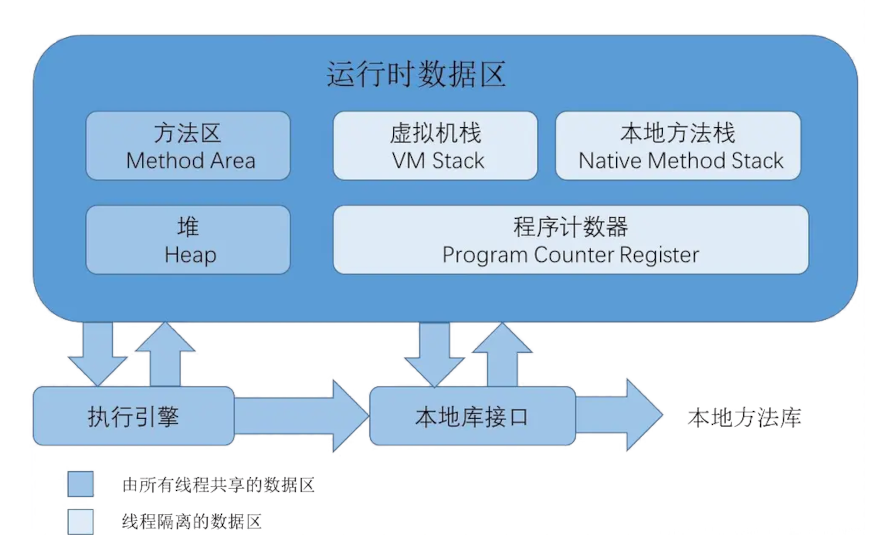
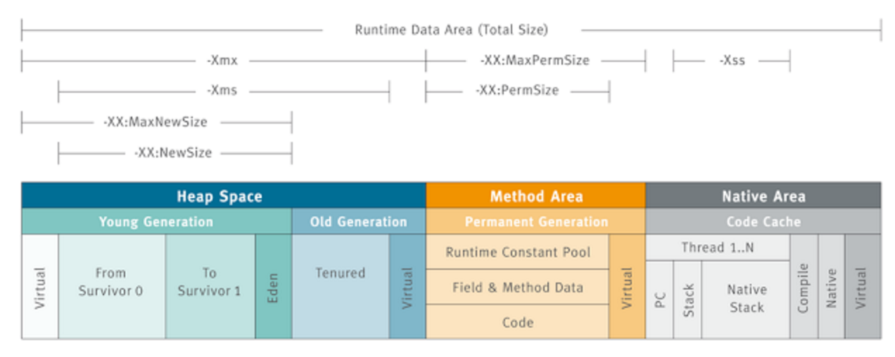
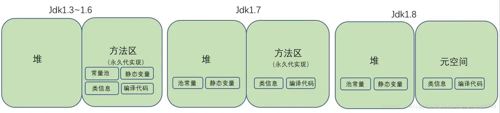

Ch02-Java 之 JVM 内存结构 (JVM)
August 6, 2017
Java 虚拟机定义了若干种程序运行期间会使用到的运行时数据区，其中有一些会随着虚拟机启动而创建，随着虚拟机退出而销毁。另外一些则是与线程一一对应的，这些与线程一一对应的数据区域会随着线程开始和结束而创建和销毁。
- 线程私有：程序计数器、虚拟机栈、本地方法区
- 线程共享：堆、方法区，堆外内存（Java7 的永久代或 JDK8 的元空间、代码缓存）

1. 堆 #
堆内存主要用于存放对象和数组，它是 JVM 管理的内存中最大的一块区域，堆内存和方法区都被所有线程共享，在虚拟机启动时创建。在垃圾收集的层面上来看，由于现在收集器基本上都采用分代收集算法，因此堆还可以分为新生代（YoungGeneration）和老年代（OldGeneration），新生代还可以分为 Eden、From Survivor、To Survivor。

2. 虚拟机栈 #
每个线程运行时所需要的内存，称为虚拟机栈。每个栈由多个栈帧（Frame）组成，对应着每次方法调用时所占用的内存。每个线程只能有一个活动栈帧，对应着当前正在执行的那个方法
3. 本地方法栈 #
虚拟机栈为虚拟机执行 Java 方法（也就是字节码）服务，而本地方法栈则为虚拟机使用到的 Native 方法服务。
4. 方法区 #
方法区在虚拟机启动时被创建，逻辑上是堆的组成部分，这里的方法区指的是规范，永久代（jdk1.6，占用的是堆内存）和元空间（jdk1.8，占用的是系统的内存）只是其实现。

- StringTable 在 jdk1.6 实现在永久代（方法区）中，jdk 1.8 后是现在堆中，majorGC 就可以回收掉，节约空间。
- 运行时常量池是方法区的一部分，编译期生成的各种字面量和符号引用在类加载后会被存放到运行时常量池中
5. 程序计数器 #
又称 PC 寄存器，记住下一条 jvm 指令的执行地址。字节码解释器工作是就是通过改变这个计数器的值来选取下一条需要执行指令的字节码指令，分支、循环、跳转、异常处理、线程恢复等。